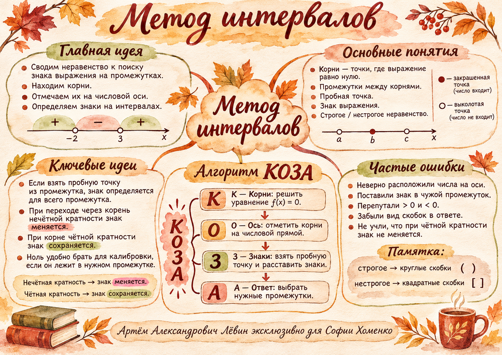

Метод интервалов
Корни делят числовую ось на промежутки. Знак выражения на каждом промежутке постоянен. Научитесь определять знаки, выбирать правильные интервалы и записывать ответ без потери граничных точек.

Лёвин Артём Александрович эксклюзивно для Софии Хоменко
Решение неравенства начинается с уравнения, полученного заменой знака неравенства на равенство нулю. Для многочлена непрерывность гарантирует постоянство знака между соседними корнями.
Числа на оси идут слева направо по возрастанию. Ноль лежит между −2 и 3, поэтому подставленное значение −6 задаёт знак «минус» именно в среднем промежутке.
Если пробная точка совпала с корнем, выберите другое число. Для «>» и «≥» выбираются участки со знаком плюс, для «<» и «≤» — со знаком минус. Граничные корни включаются только в нестрогих неравенствах.
Проверить, как знак меняется при перемещении точки на числовой оси →
Задача: решить x² − x − 6 ≥ 0 методом интервалов.
Корни
x² − x − 6 = (x + 2)(x − 3). Следовательно, x = −2 и x = 3.
Числовая ось
Отметьте −2 левее 3. Промежутков три: (−∞; −2), (−2; 3), (3; +∞).
Калибровка
Выберите x = 0 в среднем промежутке. Значение 0² − 0 − 6 = −6 отрицательно. Поэтому знаки слева направо: плюс, минус, плюс.
Ответ
Для «≥ 0» берём два промежутка с плюсами и включаем оба корня: (−∞; −2] ∪ [3; +∞).
| Знак неравенства | Ответ для x² − x − 6 |
|---|---|
| ≥ 0 | (−∞; −2] ∪ [3; +∞) |
| > 0 | (−∞; −2) ∪ (3; +∞) |
| ≤ 0 | [−2; 3] |
| < 0 | (−2; 3) |
Второй пример
Для x² − 3x − 4 ≥ 0 корни −1 и 4. Пробное значение x=0 даёт −4, поэтому знаки: плюс, минус, плюс. Ответ: (−∞; −1] ∪ [4; +∞).
Линейный случай
Для 4x + 5 ≥ 0 корень равен −5/4. При x=0 знак плюс, поэтому x ∈ [−5/4; +∞).
Решим (x + 3)(x − 1)(2x + 5) ≥ 0. Корни равны −3, −5/2 и 1. Их порядок на оси: −3 < −5/2 < 1.
При x=0 получаем 3 · (−1) · 5 = −15. Ноль расположен между −5/2 и 1, поэтому именно там знак минус. Через каждый простой корень знак меняется; знаки слева направо: −, +, −, +.
Для (−5x + 10)(x − 1)(10x + 40) < 0 корни −4, 1 и 2, знак при x=0 отрицательный. Ответ: (−4; 1) ∪ (2; +∞).
Для (x² − x − 6)(2x − 3) ≥ 0 корни −2, 3/2 и 3. Ответ: [−2; 3/2] ∪ [3; +∞).
Для x² − x + 4 > 0 дискриминант D = 1 − 16 = −15. Действительных корней нет; при x=0 значение равно 4 > 0. Значит, решение — вся числовая прямая ℝ.
Для противоположного знака, x² − x + 4 ≤ 0, решений нет: ∅.
Аналогично, −x² − x − 15 ≥ 0 не имеет решений: D = −59 и значение при нуле отрицательно.
- Порядок. Меньшие числа стоят левее больших: −4 < 1 < 2.
- Пробная точка. Минус или плюс помещают в тот промежуток, из которого взяли число.
- Выбор. Для положительных значений нужны плюсы, для отрицательных — минусы.
- Скобки и объединение. Строгое неравенство исключает корни, нестрогое включает. Раздельные части ответа соединяются ∪.
- Кратность и отсутствие корней. При чётной кратности знак не меняется; если корней нет, знак может быть постоянным на всей оси.

В каждой задаче укажите корни, числовую ось, знаки и множество решений.
- 5x − 10 > 0
Проверить ответ
x ∈ (2; +∞)
- 3x + 9 ≤ 0
Проверить ответ
x ∈ (−∞; −3]
- x² − x − 12 ≥ 0
Проверить ответ
x ∈ (−∞; −3] ∪ [4; +∞)
- x² + 2x − 8 < 0
Проверить ответ
x ∈ (−4; 2)
- x² − 7x + 10 ≤ 0
Проверить ответ
x ∈ [2; 5]
- (x + 4)(x − 2)(x − 5) > 0
Проверить ответ
x ∈ (−4; 2) ∪ (5; +∞)
- (x − 1)(3x + 6)(x + 3) ≤ 0
Проверить ответ
x ∈ (−∞; −3] ∪ [−2; 1]
- (x² − 4)(x + 1) ≥ 0
Проверить ответ
x ∈ [−2; −1] ∪ [2; +∞)
- x² − 2x + 5 ≤ 0
Проверить ответ
∅
- −x² + 4x − 7 < 0
Проверить ответ
ℝ = (−∞; +∞)
Отмечено: 0 из 5.